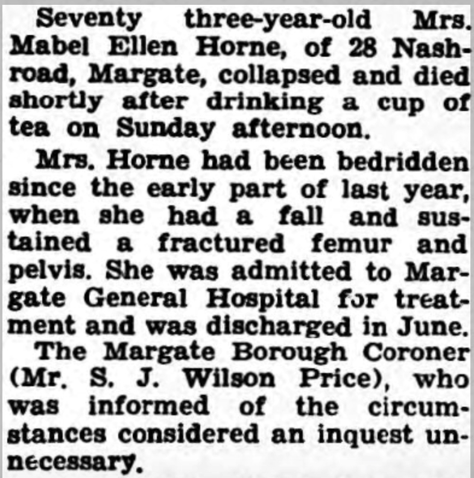
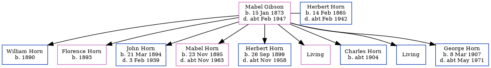

Mabel Ellen Horn (née Gibson) 1873 - c1947
[ Home ] | [ Calendar ] | [ Surnames Index ] | [ Family History ]Mabel Gibson, the wife of Herbert James Horn (the first cousin three-times-removed on the father's side of Nigel Horne), was born in Chartham, Kent, England on Jan 15, 18731,2,3,4,5 and married Herbert (a carter with whom she had 9 children: William, Florence, John Edwin Ernest, Mabel Ellen Frances, Herbert James Frederick, Kathleen Charlotte, Charles, James and George Francis, along with 2 surviving children) at St John The Baptist's Church, Margate, Kent, England on Oct 17, 18917.
Mabel spent all of her life in Kent, England. Throughout her life, she lived in several places around the county: at Shalmsford Street in Chartham on Apr 3, 18811; on 6 Grange Road in Margate on Mar 31, 19012; on 84 Byron Road in Margate on Apr 2, 19113; on 109 Nash Road in Margate on Sep 29, 19394; and on 28 Nash Road in Margate in 1947.
She died c. Feb 1947 in Thanet, Kent6.
Children
- William was born in 1890
- Florence was born in 1893
- John Edwin Ernest was born on Mar 21, 1894
- Mabel Ellen Frances was born on Nov 23, 1895
- Herbert James Frederick was born on Sep 26, 1899
- Charles was born c. 1904
- George Francis was born on Mar 8, 1907
Citations
- 1881 England, Wales & Scotland Census - Findmypast (was age 8 and the grand daughter of the head of the household)
- 1901 England, Wales & Scotland Census - Findmypast (was age 28 and the wife of the head of the household)
- 1911 Census for England & Wales - Findmypast (was age 39 and the wife of the head of the household)
- 1939 Register - Findmypast (was recorded at this address)
- England & Wales births 1837-2006 - Findmypast
- England & Wales deaths 1837-2007 - Findmypast
- England & Wales Marriages 1837-2005 - Findmypast
Media
Thanet Advertiser 24 Oct 1891

Thanet Advertiser - 10 Jan 1947

England & Wales births 1837-2006 - BMD/B/1873/1/AZ/000207/297
England & Wales deaths 1837-2007 - BMD/D/1947/1/AZ/000629/111
1901 England, Wales & Scotland Census - GBC/1901/0007429436
Kent, Canterbury Archdeaconry marriages - GBPRS/CANT/M/97025029/2
Kent, Canterbury Archdeaconry marriages - GBPRS/CANT/M/97032599/2
1939 Register - TNA/R39/1752/1752G/010/07
1881 England, Wales & Scotland Census - GBC/1881/0004707180
Family Tree
Generated by Ged2Site. Last updated on Jul 20, 2025